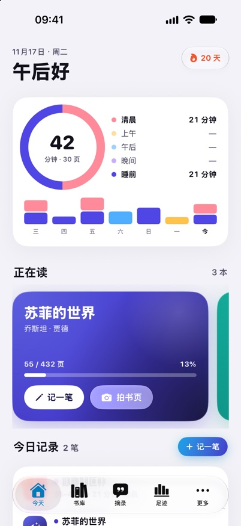
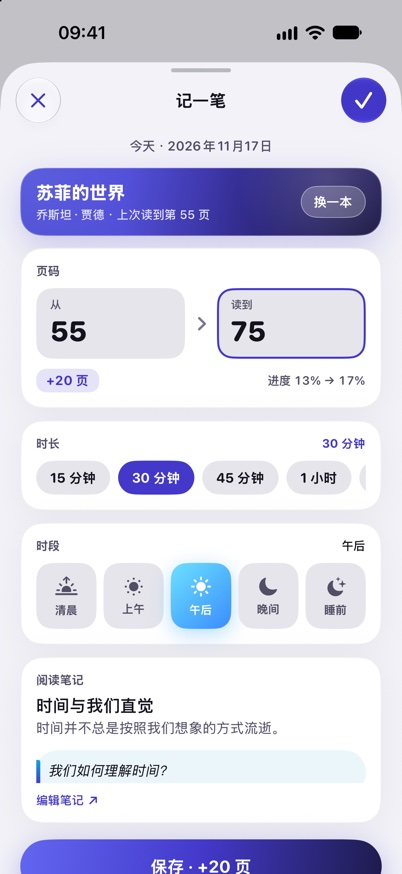
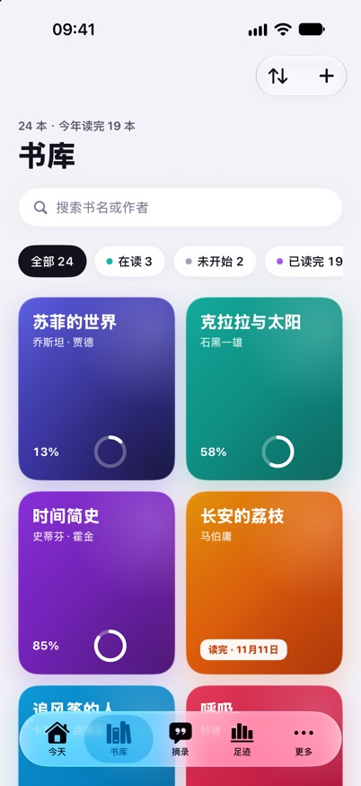
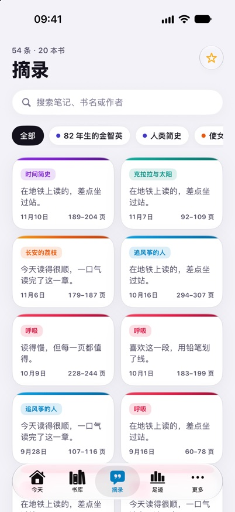
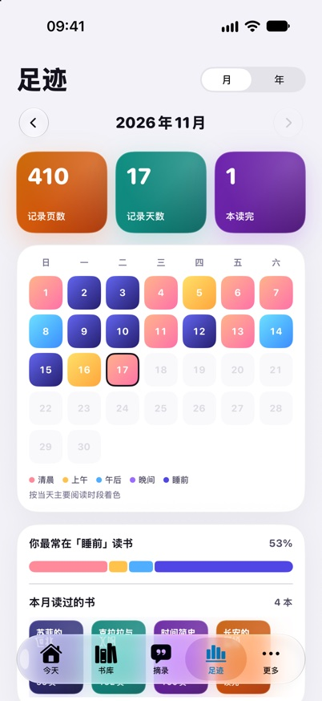

INTERLEAF / 读迹 · PRISM
读过的每一页，
都汇成光谱。
记住读到了哪一页、在哪段天色里翻开，也留住随手写下的句子。书籍、五时段光谱、摘录墙与足迹日历，在这里慢慢连成自己的阅读日常。
iOS 26+ · 已在 App Store 上架
截图来自 Prism 新版界面，功能与界面以所在地区 App Store 最新版本为准。

无需注册账号
没有广告与追踪
按需开启 iCloud 同步
01 / 随手记一笔
读了一会儿，
就记一笔。
不用开启计时器，也不用完成打卡目标。在「今天」或书籍卡片上点「记一笔」，整张表单会跟随当前书色亮起。
- 选书与页码
自动记住上次读到的页码，填入今天读到第几页即可。
- 时长与时段
一键点选时长与五个时段（清晨、上午、午后、晚间、睡前），不填也没关系。
- 图文摘录
随手写下想法、拍下书页或通过设备端文字识别插入摘录。


02 / 彩色书库
每本书，
都有它的颜色。
为每本书挑选专属的渐变书色，把全部、在读、未开始与已读完的书整齐收在一起，按书名或作者随时搜索。
打开书籍详情，查看沉浸式书色头图、近 3 周阅读节奏与时间轴记录，或手动标记读完。
03 / 摘录与足迹
留住喜欢的句子，
看见每一天的天色。
在「摘录」瀑布流里按书筛选、收藏和搜索带格式笔记与拍下的书页；首页「回响」还会随机为你翻出往日笔记。
「足迹」月历按当天主要阅读时段着色，年视图展示全年阅读光谱色带；还支持「继续阅读」「今日光谱」「阅读色带」桌面小组件。


你的记录，由你保管
安心记录，
自由带走。
默认留在本机
无需注册读迹账号。拍书页文字识别完全在设备上完成，不上传给第三方识别服务。
按需使用 iCloud
在设置中主动开启，通过自己的 Apple 账户同步。小组件仅读取页数与分钟汇总，不触碰笔记内容。
带走完整的笔记
书库备份包（.dujibackup）完整保留书籍、记录、格式笔记与附件；继续兼容旧 JSON 备份与 Excel 导入导出。